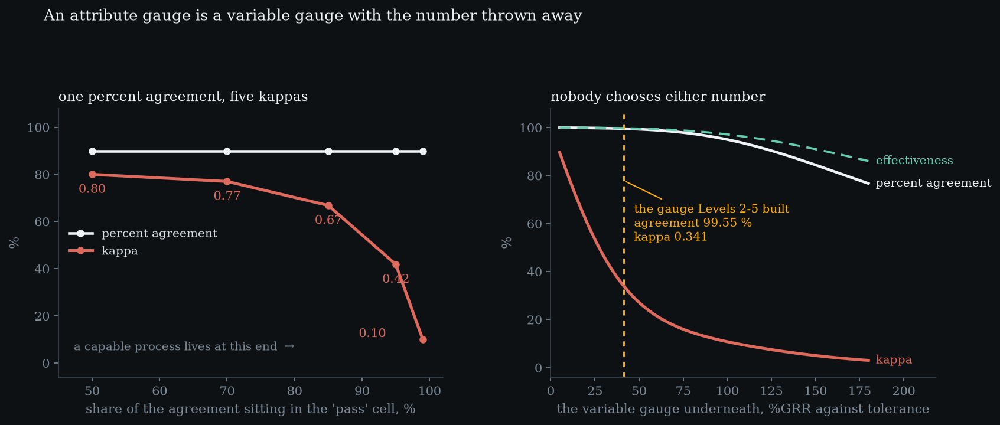
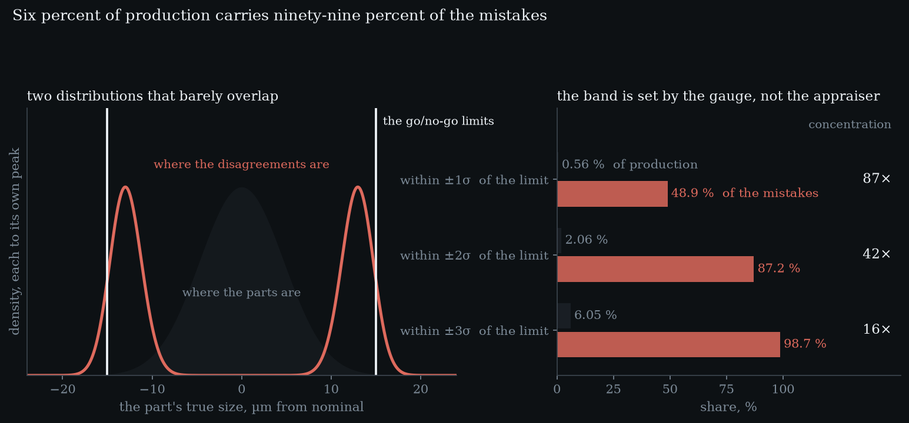

Level 6 · chapter six
Attribute agreement
The gauge says pass, and nothing else. There is no reading to subtract, no variance to decompose, no sigma to put in a denominator — and the three questions from the first five levels all still need answers, now built out of counts.
after Level 5 — bias, linearity, stability·leads to Level 7 — the handshake back
- 6.1The three questions outlive the numberno reading to subtract, and the same three things to answer
- 6.2Percent agreement cannot see an idle appraiserpass everything and score 99.86 % against the truth
- 6.3Kappa removes chance, and punishes a good processone percent agreement, five tables, kappa 0.80 to 0.10
- 6.4Nobody chooses a kappaevery number an attribute study reports is the gauge's
- 6.5The band, and the bill6 % of production, 99 % of the mistakes, 457 bad parts
The three questions outlive the number
Five levels have divided one spread by another. Every quantity in them — a repeatability, a reproducibility, an interaction, two ratios, a bias — needed a reading you could subtract from another reading. Now the gauge says pass.
A thread gauge fits or it does not. what does changeWith counts, repeatability and reproducibility stop being different calculations. Two independent looks at one part is two independent looks, whoever is doing the looking.An operator looks at a weld and calls it good. A vision system returns a verdict. There is no number to take a standard deviation of, and yet the three questions are unchanged: does one appraiser agree with himself, do two agree with each other, and does either agree with the truth. Only the arithmetic has to change, from spreads to counts.
Percent agreement cannot see an idle appraiser
Start with the obvious statistic and watch it fail. Hire an appraiser who never looks at a part and passes every one.
Against himself he is perfect: he never contradicts himself, because he never decides anything. an appraiser who never looksagrees with himself100.00 %agrees with a colleague100.00 %agrees with the truth99.86 %bad parts he passed100 %Against a colleague with the same habit, also perfect. And against the truth he scores 99.86 %, because that is the share of parts that were good. He missed 100 % of the bad ones.
Nothing about the gauge and nothing about the appraiser entered that number. why it happensTwo people who both say the same thing to everything agree completely, whatever that thing is and whether or not it is right.It is the base rate of the process, which on a capable line is a figure that reads like success. Percent agreement on a good process is close to uninformative, and it is the statistic attribute studies report first.
Kappa removes chance, and punishes a good process
The standard fix is to subtract the agreement two people would have reached by chance and report only the surplus. That is Cohen’s kappa, and it sees straight through the idle appraiser: for him it cannot be computed at all, because chance accounts for everything he did.
But the chance term is built from the marginals, so it depends on how lopsided the stream is. all at 90 % observed50 % of the agreement in 'pass'0.80070 % of the agreement in 'pass'0.77085 % of the agreement in 'pass'0.66895 % of the agreement in 'pass'0.41899 % of the agreement in 'pass'0.099Hold the observed agreement fixed at 90 % and move nothing but the skew, and kappa runs from 0.800 down to 0.099. Five tables, one percent agreement, and a verdict that swings from excellent to worthless.
The direction of that is the problem. not a reason to ignore itKappa is right that little has been learned. What is wrong is reading it as a score for the appraisers.A capable process puts nearly all of its parts in one cell, which is the skewed end, which is where kappa collapses. Being good at making parts lowers your kappa without anybody touching the gauge.

Nobody chooses a kappa
Which raises the question of where kappa comes from. Behind every go/no-go gauge there is a real dimension and a real instrument: the appraiser has no number, but the thing in his hand does, and it is the gauge the first five levels built.
So an attribute study does not measure an independent property of the appraisers. one sigma, six consequencesthe gauge underneath2.0591 µmas %GRR of tolerance41.2 %percent agreement99.545 %kappa0.341bad parts passed30.16 %good parts failed0.248 %Every number it reports is a function of that gauge’s sigma, the part spread and the tolerance. On our own gauge — 41.2 % of tolerance, the one Level 4 already called a reject — percent agreement comes out at 99.55 % and kappa at 0.341. Those are the same instrument on the same day.
Improve the instrument and all six move together. the practical formIf the kappa is poor, ask what the underlying gauge is doing before scheduling appraiser training.A gauge at 10 % of tolerance lifts kappa to 0.796 and drops the miss rate to 12.0 %. Nobody negotiated that. An attribute study that reports kappa and stops has measured a consequence and left the cause alone.
- percent agreement %
- —
- kappa
- —
- bad parts passed %
- —
- good parts failed %
- —
Nobody sets a kappa. Drag the gauge and every number an attribute study reports moves at once, because all of them are functions of one sigma. Percent agreement stays comfortable while kappa falls off a cliff — the two tiles disagree about the same instrument on the same day. Then add a guard band: escapes fall, and the price is paid entirely in good parts.
The band, and the bill
If the disagreements come from the instrument, their location is not a mystery. A part far inside the limit is never failed; a part far outside is never passed. Everything contested sits in a band around the limit whose width the gauge sets.
Within one gauge sigma of a limit lies 0.56 % of production and 48.9 % of every disagreement. where the contested parts arewithin ±1σ of the limit0.56 % of parts, 48.9 % of mistakeswithin ±2σ of the limit2.06 % of parts, 87.2 % of mistakeswithin ±3σ of the limit6.05 % of parts, 98.7 % of mistakesWithin three sigmas, 6.05 % of production and 98.7 %. Which is why retraining the appraiser does so little: he is being asked to resolve differences smaller than the tool can report.

The standard response to an escape is to move the acceptance limit inward. why the price risesThe escapes live nearest the limit, so the first micron of guard band catches the cheapest ones. After that you are buying rarer mistakes with commoner good parts.It works: a 3 µm guard band takes the miss rate from 30.2 % to 3.1. The price is paid entirely in good parts, and it rises: 11 good parts lost per escape saved at the first half-micron, 68 by four microns.
And a count is dearer than a measurement. the price of throwing the number awayLevel 2, a full variance90 readingsbound a 5 % miss rate to ±2 points457 bad partszero misses in 50 still allows5.82 %zero misses in 300 still allows0.99 %Level 2 settled a whole variance with ninety readings; bounding a five percent miss rate to plus or minus two points needs 457 known-bad parts, and a plant that can find 457 bad parts has a different problem. Worse, the usual result — no escapes found — is weak: zero misses in fifty bad parts is still consistent with a miss rate of 5.82 %.
So six levels have described one measurement system, from a single reading of one bore to a gauge with no reading at all. the seam aheadLevel 7 is the handshake back: what a measurement system owes the chart that consumes it, and what the chart is entitled to assume.What has not been done is hand it back. Every one of these numbers exists to be used by somebody watching a process, and the handover has its own arithmetic.